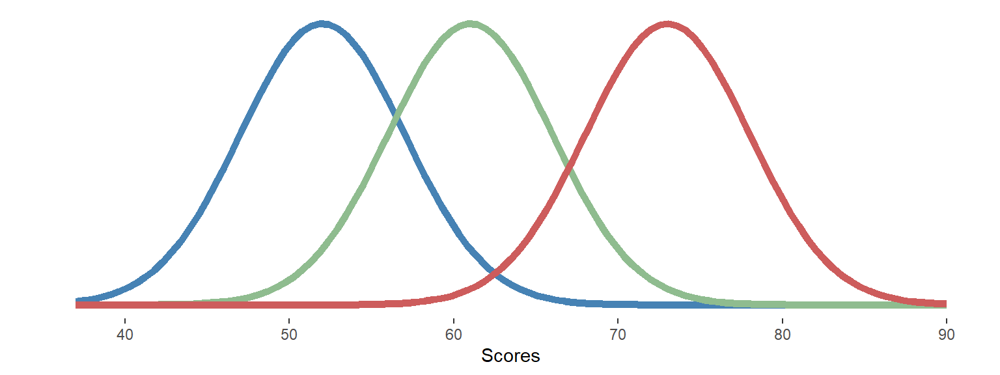
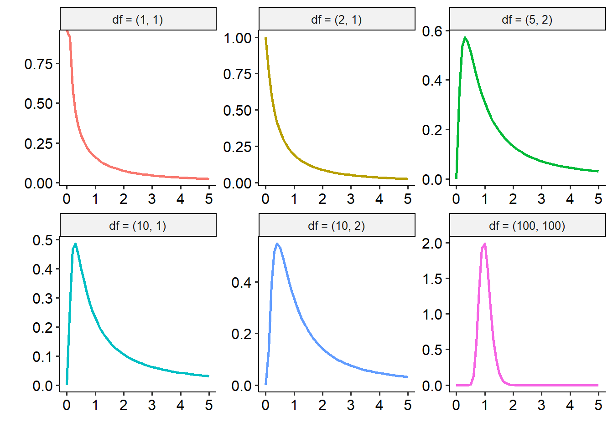
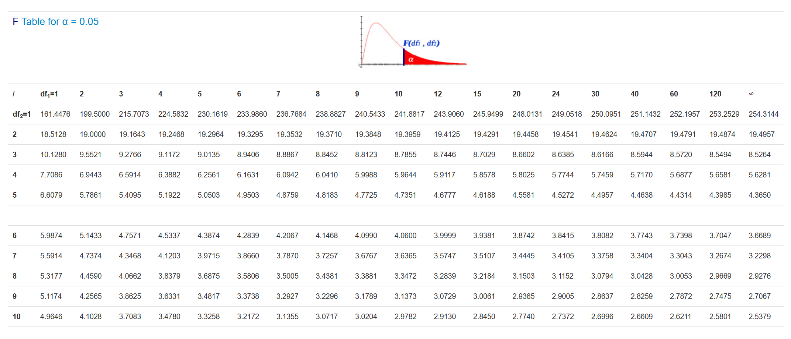
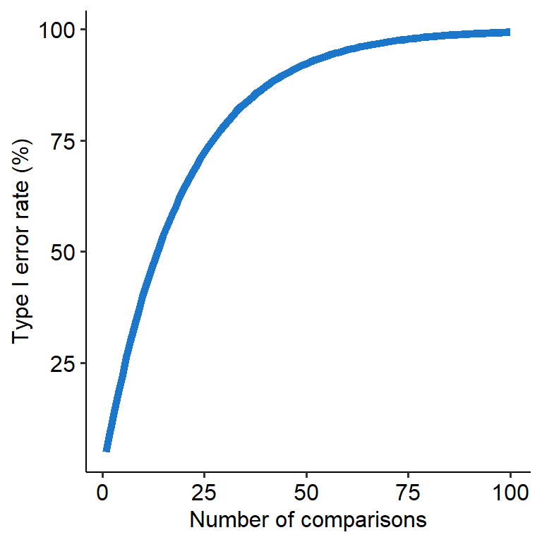
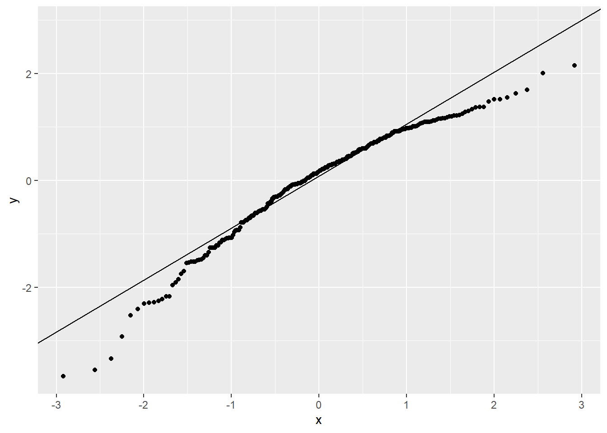

6 ANOVAs
t-tests, as we saw last week, were a simple way of comparing a continuous outcome between two groups or conditions (i.e. one categorical variable with two levels). However, it’s also common to compare across three or more groups when doing real research. To test this kind of hypothesis where we have three or more groups, we need to turn to a different method - the ANOVA. ANOVAs are useful when you have one categorical IV with 3+ levels, and one continuous DV.
The ANOVA is perhaps one of the most common statistical tests you will see in music psychology literature, in part because they generalise to a lot of research designs. In many respects, this week is fairly important in terms of knowing how to conduct an ANOVA and when. We’ll only be stepping through the basics this week, but there are some really important fundamentals to cover here.
It’s also common to analyse two independent variables against one dependent variable. These too can be done using ANOVAs. While we won’t go into this in this module, there will be an Extension Module that deals with this separately - check it out sometime around Week 10/11 if you’re interested.
By the end of this module you should be able to:
- Understand and describe the conceptual basis of an analysis of variance
- Describe how an ANOVA is calculated
- Conduct both one-way ANOVAs and one-way repeated ANOVAs, including their assumption tests
- Interpret the output of the ANOVAs and report their findings

6.1 Anovas and the F-distribution
Just as we’ve done so for chi-squares and t-tests, let’s begin with an overview of the mathematical and conceptual underpinnings of the ANOVA.
6.1.1 The basic logic of ANOVAs
As we said in the introductory page, ANOVA stands for ANalysis Of VAriance. This essentially sums up how an ANOVA works in principle. ANOVAs can be used when analysing a categorical IV with two or more groups (typically 3+) and a continuous DV. As the setup suggests, ANOVAs are a good way of comparing different groups on a singular outcome.
The most basic hypotheses for an ANOVA center around whether or not the means between groups are significantly different, i.e.:
- \(H_0\): The means between groups are not significantly different. (i.e. \(\mu_1 = \mu_2 = ... \mu_k\))
- \(H_1\): The means between groups are significantly different. (i.e.\(\mu_1 \neq \mu_2 \neq ... \mu_k\))
How do we test for this? The basic logic of the ANOVA is this: Whenever we have data that we categorise into different groups, we end up with two key sources of variability, or variance: variance that exists between groups, and variance that exists within groups:

Pretend that the three curves above represent data covering three different groups, and that we’ve hypothesised that there are three different means. Collectively, this data has a certain amount of variance.
The first fundamental to recognise is that this total variance can be broken down into variance between groups and variance within groups:
\[ Variance_{total} = Variance_{between} + Variance_{within} \]
The variability between the groups would simply be the variance between the blue curve and the orange curve - in other words, how far apart the two sets of data are (in a simplistic sense). The within-group variance, on the other hand, is how much variance there is within each curve. If there is a lot of within-group variance within each curve, that would mean that (thinking back to Module 5) each group’s curve would be spread widely.
If you’re following the logic of this so far, the consequences of high within-group variance might be obvious - the two curves would significantly overlap. In contrast, if the between-group variance is far higher than the within-group variance, the curves may not overlap much at all - suggesting that the means of the two groups really are different.
This forms the basis of the ANOVA’s F-test, which is a ratio of variance:
\[ F = \frac{Variance_{between}}{Variance_{within}} \]
We will see this more in practice on the next page, but the F-statistic, which we use as part of significance testing in ANOVAs, is calculated by simply dividing the between-group variance by the within-group variance.
6.1.2 The F-distribution
Like the other tests we’ve encountered so far, ANOVAs have their own underlying distribution. In this instance, this is the F distribution, which describes how the F-statistic behaves. We won’t go far into the maths around this, but the key here is that the F distribution is characterised by two sets of degrees of freedom: one that relates to the between-groups variance/effect, and one that relates to the within-groups variance. One thing to note here is the terminology in the headers of each graph: the first number in the brackets refers to the between-groups variance, while the second number refers to the within-groups variance.

6.1.3 F-statistic tables
And, once again, we have a special F-table to determine critical F values, given two degrees of freedom values. However, given that we have two degrees of freedom the process is a little bit more complicated. Most F-stat tables actually provide multiple tables, corresponding to different alpha levels. For now, we will always use the table corresponding to alpha = 0.05, a snippet of which is below:
knitr::include_graphics(here("img/w9_f-table.png"))
To read this table, you need to know both degrees of freedom (more on how to find that on the next page). The columns, marked df1, refer to the first df value (between-groups), while the rows correspond to the second df value (within-groups).
So, for example, if we have an F-test with degrees of freedom of (4, 10), we would first need to find the column that corresponds to 4 (our df1), and then the row that corresponds to df2 = 10. Reading the cell at the intersection would give us a critical F-statistic of 3.48; this is the value our F-statistic would need to be greater than to be significant at the p < .05 level.
6.2 The ANOVA table
Every time we do an ANOVA, there are actually a raft of calculations that have to occur in order to get our test statistic and p-value. Statistical software will display all of this in the form of an ANOVA table, which we cover below.
Don’t stress too much about the maths here - while the quiz does include one question about this, the question itself isn’t difficult (and you won’t be expected to do any of this by hand otherwise). The reason why we go through this, however, is to demonstrate the conceptual logic from the previous page.
6.2.1 The ANOVA table
On the previous page, we talked in depth about how the F statistic is calculated, and what shapes the overall distribution. But how do we actually calculate all of that stuff to begin with from raw data? Enter the ANOVA table, a beautiful (remember, beauty is subjective) way of calculating this information and laying it all out to see.
The basic ANOVA table looks like this, which you will see on any statistical package you use.
| Sums of squares (SS) | Degrees of freedom (df) | Mean square (MS) | F | p | |
|---|---|---|---|---|---|
| Group (our effect) | |||||
| Error/Residual | |||||
| Total |
A couple of terminology-related things here.
- ‘Group’ in this context is our independent variable (i.e. the effect of group)- this is our between-subject variance.
- ‘Error’ or ‘Residual’ is the within-group variance.
Let’s use the below data to calculate this by hand.
| Group 1 | Group 2 | Group 3 |
|---|---|---|
| 1 | 2 | 5 |
| 2 | 4 | 8 |
| 3 | 5 | 6 |
| 2 | 3 | 7 |
| Mean: 2 | Mean: 3.5 | Mean: 6 |
The grand mean (i.e. the mean across all 12 pieces of data) is 4. Keep this in mind.
Time to strap in - there are a lot of formulae involved!
6.2.2 Sums of squares
The sum of squares quantifies how far each observation is from the average - just like how it is calculated in the formula for standard deviations. For an ANOVA, we have two sets of SS to calculate - one for the between-groups term, and one for the within-groups/error.
Between
The formula for the between-groups sum of squares (\(SS_b\)) is:
\[ SS_b = \Sigma n(\bar x - \bar X)^2 \]
In words, this means:
- Take each group’s mean (\(\bar x\)), and subtract them from the grand mean (\(\bar X\))
- Square that difference
- Multiply it by n, the size of each group
- Add them all up.
Let’s do that for our fictional data. Our group means are Group 1 = 2, Group 2 = 3.5 and Group 3 = 6.5. \[SS_b = 4(2-4)^2 + 4(3.5-4)^2 + 4(6.5-4)^2\]
\[SS_b = (4 \times 4) + (4 \times 0.25) + (4 \times 6.25)\] \[SS_b = 42\]
Within
For the within-group sum of squares, the formula is:
\[ SS_w = \Sigma (x - \bar x)^2 \]
This one is a bit more tedious. It means:
- Take each observation (\(x\)), and subtract them from their group mean (\(\bar x\))
- Square that difference
- Add them all up.
So for our data, it would look something like.. \[ \begin{aligned} SS_w = (1-2)^2 + (2-2)^2 + (3-2)^2 + (2-2)^2 + \\ (2-3.5)^2 + (4-3.5)^2 + (5-3.5)^2 + (3-3.5)^2 + \\ (5-6.5)^2 + (8-6.5)^2 + (6-6.5)^2 + (7-6.5)^2 \end{aligned} \] \[SS_w = 12\].
6.2.3 Degrees of freedom
Because we have a term for between-groups and within-groups effects, we also have degrees of freedom for both (think back to the previous page). Thankfully, unlike the mess above the formulae here are relatively simple.
Between
The between-groups df is given as:
\[ df_b = k - 1 \]
Where k = the number of groups. So, in our data, \(df_b = 3 -1 = 2\) (as we have 3 groups).
Within
The within-groups df is given as:
\[ df_b = N - k \]
Where k = the number of groups, and N is the total sample size (in our case, 12). So \(df_w = 12 -3 = 9\) (as we have 3 groups and 12 data points in total).
6.2.4 Mean squares
The mean squares is another value for variance that essentially standardises the sum of squares by the degrees of freedom. The formula for MS between and within is the same:
\[ MS = \frac{SS}{df} \]
We’ve calculated SS and df for both our between and within-groups effects, so we can substitute these values in to calculate a mean square value for both:
\[MS_b = \frac{SS_b}{df_b}\] \[MS_w = \frac{SS_w}{df_w}\]
Putting in our values that we calculated earlier, we get:
\[MS_b = \frac{42}{2}\] \[MS_w = \frac{12}{9}\]
This gives us \(MS_b = 21\) and \(MS_w = 1.33\).
6.2.5 Calculating F
Remember on the previous page, how we talked about the F-statistic being a ratio between two variances (between divided by within)? That’s exactly what we’re going to do next, using our calculated mean-square values:
\[ F = \frac{MS_b}{MS_w} \]
This gives us:
\[ F = \frac{21}{1.33} = 15.75 \]
6.2.6 Putting it all together
Phew! Now we’ve calculated everything we need to for our ANOVA - in essence, we’ve done the majority of the ANOVA by hand. Let’s put all of our values into the table below:
| Sums of squares (SS) | Degrees of freedom (df) | Mean square (MS) | F | p | |
|---|---|---|---|---|---|
| Group (our effect) | 42 | 2 | 21 | 15.75 | |
| Error/Residual | 12 | 9 | 1.33 | ||
| Total | 54 |
Before we move on, it’s also worth noting that \(SS_b + SS_w = SS_{total}\) ; this goes back to the fundamental we discussed on the previous page, where an ANOVA breaks down total variance into between and within-groups variance.
6.2.7 Consulting the F-table
Now that we have our observed F-value, we can now consult an F-table and use our two degrees of freedom to find out what our critical F-value is (setting alpha = .05):
Reading the column for df1 = 2, and the row for df2 = 9, we get a critical F-statistic of 4.2565. Now we can say that because our observed test statistic (15.75) is greater than this critical value, our ANOVA is significant at the alpha = .05 level.
In reality, like many of the other tests, we would calculate a p-value by observing where our test statistic falls on the F-distribution, and the associated probability of getting that value or greater. Our software will do all of this stuff for us, but it helps to know exactly how an ANOVA works!
If you want to calculate the p-value manurally in R though, this is entirely possible using the pf() function:
pf(q = 15.75, df1 = 2, df2 = 9, lower.tail = FALSE)[1] 0.0011495926.3 Multiple comparisons
On this page we talk about what happens after a significant ANOVA result, as well as some more detail about the multiple comparisons problem, and how it can be accounted for.
6.3.1 Post-hoc tests
The ANOVA table on the previous page allows us to calculate by hand whether there is a significant effect of our IV. However, it doesn’t tell us where that difference lies. Remember, we’re comparing at least three groups with each other - so we need some way of figuring out where the actual significant differences between means are.
Enter post-hoc comparisons (post-hoc = after the fact). These are essentially a series of t-tests where we compare each group with each other. So, if we have groups A, B and C, and we get a significant omnibus ANOVA that tells us there is a significant difference somewhere in those means, we would run post-hoc comparisons by running individual t-tests on A vs B, then B vs C, then A vs C.
However, we can’t just do this blindly, and there’s a good reason why…
6.3.2 The multiple comparisons problem
In Module 6, we talked a fair bit about Type I and II error rates - i.e., the rate of making a false positive and false negative judgement respectively. Here, we’ll focus on Type I error.
Recall that whenever we do a hypothesis test, we set a value for alpha, which forms our significance level. Alpha is essentially the probability of Type I errors we are willing to accept in a given test. In other words, when we use the conventional alpha = .05 as our criterion for significance, we are saying that we’re willing to accept a Type I error occurring 5% of the time - or 1 in 20.
This becomes problematic when we have to conduct multiple tests at once, like what we have to do in an ANOVA. For example, let’s say a variable has 5 levels - A, B, C, D and E. If we ran an ANOVA on this data and found a significant omnibus effect, we would want to find out where that effect is. But that means that we’d have to compare A, B, C, D and E all against each other, in a round-robin tournament way (e.g. A vs B, then A vs C…). Where this becomes an issue is that each comparison will have its own 5% Type I error rate (assuming we use alpha = .05). So in this scenario, the Type I error rate will stack with each new comparison, meaning that our overall Type I error rate will climb higher and higher. This means that the chance of finding a false positive will increase (see graph below).

This overall rate of Type I errors is called the family-wise error rate (FWER). ‘Family’ in this context refers to a family of comparisons - like the comparison across A to E that we saw above.
6.3.3 Correction methods
One way of dealing with this is to correct the p-values to set the family-wise error rate back to 5%. We’ll go through three main types (two of which are already covered in the seminar).
Tukey’s HSD
Tukey’s Honest Significant Differences (Tukey HSD for short) is appropriate specifically for post-hoc tests after ANOVAs. It essentially works by first calculating the largest possible difference between each group’s means, then using that to calculate a critical mean difference. Any mean difference that is greater than this critical threshold is significant.
Tukey’s HSD works very similarly in principle to a t-test, although the exact maths involved are slightly different. The test statistic for a Tukey test is called q which denotes the Studentized range distribution (a specific distribution). For a given comparison between two group means, the formula for q is:
\[ q = \frac{|M_1 - M_2|}{SE} \]
Where \(M_1\) and \(M_2\) denote the means of groups 1 and 2, and SE denotes the standard error of the sum of the means. The q-statistic is then compared to a Studentized range distribution to estimate a p-value for that comparison. The shape of the Studentized range distribution is determined by alpha, k (the number of groups being compared) and df (in this case, the **error degrees of freedom***).
Bonferroni
The Bonferroni correction is a method that can be used both within ANOVAs and in more general contexts. The Bonferroni correction works by multiplying each p-value in a set of comparisons by the number of comparisons (i.e. the number of p-values).
For example, if a set of comparisons gives the following p-values: 0.05, 0.25 and 0.10, we would apply a Bonferroni correction by multiplying each p-value by 3 (as there are 3 p-values) to get 0.15, 0.75 and 0.30 respectively.
(Note: in reality, Bonferroni works by dividing alpha by the number of comparisons, i.e. 0.05/3 - but for the purpose of significance testing, the maths works out to be the same).
Holm
The Holm correction is another correction method. In this method, each p-value is first ranked from smallest to largest. and then numbered in a descending fashion. Using the same p-values as above, we would get 0.05, 0.10 and 0.25. The p = .05 would be ranked as 3, the p = .10 would be 2 and p = .25 would be 1.
You then multiply the p-value by its rank, like the table below, to get your adjusted p-values:
| Original p-value | Sorted p-value | Rank | p-value x rank |
|---|---|---|---|
| 0.05 | 0.05 | 3 | 0.15 |
| 0.25 | 0.10 | 2 | 0.20 |
| 0.10 | 0.25 | 1 | 0.25 |
The Bonferroni procedure is very conservative, in that it may actually overcorrect (and subsequently reject too many); the Holm correction still corrects the overall FWER without also increasing the overall Type II rate as well.
6.3.4 Post-hocs in R
To just get adjusted p-values, we can use the function pairwise.t.test(). This needs three arguments:
xrefers to the column of data for the outcome, expressed asdata$x.grefers to the group/IV, again asdata$g.p.adjust.methodrefers to the adjustment method. Note this argument does not allow Tukey adjustments: only Bonferroni and Holm are allowed.
pairwise.t.test(x = w9_slices$rating, g = w9_slices$group, p.adjust.method = "bonferroni")
Pairwise comparisons using t tests with pooled SD
data: w9_slices$rating and w9_slices$group
caramel lemon
lemon 0.6866 -
vanilla 0.0541 0.0017
P value adjustment method: bonferroni A more powerful and flexible method is using the emmeans package. emmeans stands for estimated marginal means, which are model-derived estimates of each group’s mean. Simple effects tests are generally run on the estimate marginal means, and thus this package allows us a handy way to run these comparisons.
There are two steps to using emmeans:
- Define the estimated marginal means for the post-hocs.
This is simple to do. We call the emmeans() function, which will set up all comparisons for the post-hoc. This function needs two arguments at minimum:
- The
aovmodel name, and - The variable (i.e. the groups) from which you are comparing levels against. This is given as
~ group, where group denotes our IV.
Imagine an ANOVA model named model_aov, with variable A that defines the groups in our ANOVA. Our first step would be to set up the comparisons using emmeans() like below:
model_em <- emmeans(model_aov, ~ A)- Generate pairwise comparisons for the post-hoc.
Continuing on from the example above, we can use the pairs() function on our EM object, model_em, to run the post-hocs. infer = TRUE will generate confidence intervals for the difference in EM means. By default this will be set at 95% confidence, which is typically what we want.
pairs(model_em, infer = TRUE)If we want to adjust the p-values at this stage, we can give pairs() an additional argument adjust, with the name of the adjustment method as a string. pairs() will let you use Tukey, Bonferroni and Holm adjustments.
pairs(model_em, infer = TRUE, adjust = "holm")Optionally, to do this all in one go we could simply pipe from emmeans() to pairs() as follows:
emmeans(model_aov, ~ A) %>%
pairs(infer = TRUE, adjust = "holm")6.4 Eta-squared
Time to go over a new effect size measure! This time, we use eta-squared (\(\eta^2\)) as an effect size for ANOVAs.
6.4.1 Eta-squared and variance
At the start of this module, we introduced the concept of how ANOVA partitions total variance into both between and within-subject variance:
\[ Variance_{total} = Variance_{between} + Variance_{within} \]
This partitioning allows for a simple but important way of calculating effect sizes for ANOVAs. If we’re interested in the effect of our IV (group, which is between-subject variance), we simply need to know how much of the total variance is explained by this variable.
This is eta-squared (\(\eta^2\)), our effect size for ANOVAs. Eta-squared gives us a percentage of how much variance in the DV can be attributed to the IV. So an eta-squared of .778 means that 77.8% of the total variance in the outcome variable/DV is because of the IV variable/main effect. It is calculated as follows:
\[ \eta^2 = \frac{SS_{effect}}{SS_t} \]
In other words, we divide the sum of squares for the main effect by the total sum of squares. For repeated-measures ANOVAs, the formula is the same in practice (i.e. divide the SS in the top row in the ANOVA table by the total).
A related version of this is partial eta-squared (\(\eta^2_p\)). This describes the effect of the IV after accounting for the variance explained by other factors. This is not so relevant for one-way designs - regular and partial eta-squared will give the same answer - but becomes more relevant when you move into factorial designs where you have more than one IV.
The formula for partial eta-squared is:
\[ \eta^2_p = \frac{SS_{effect}}{SS_{effect} + SS_{error}} \]
Where \(SS_{error}\) is the sums of squares for the error/residual term in an ANOVA. In general, it’s good practice to default to at least reporting partial eta-squared. Again, in a one-way ANOVA this will give the same answer as regular eta-squared, but in a factorial design (where you have more than one IV) it will give a more precise estimate of each variable’s effect size.
One more variant you will see is generalised eta-squared \(\eta^2_g\), which is similar to the partial variant. While partial eta-squared is great, it is sensitive to design - in other words, what variables are included in the analysis will influence the calculation of \(\eta^2_p\), meaning that it is only really comparable across studies of similar design. However, not every design will manipulate every predictor (e.g. gender), and so generalised eta-squared (\(\eta^2_G\)) can handle this. This effect size is best used in meta-analyses.
To calculate eta-squared using R, there are two ways as per usual. The first is by using tthe anova_test() function in rstatix. By default, anova_test() (and other ANOVA-related packages in R) will calculate generalised eta squared (labelled ges in the output). If you want partial eta-squared, you just need to give anova_test() the extra argument effect.size = "pes" as follows:
w9_memory %>%
anova_test(dv = memory_score, wid = Participant, within = time, effect.size = "pes") ANOVA Table (type III tests)
$ANOVA
Effect DFn DFd F p p<.05 pes
1 time 2 188 132.625 1.19e-36 * 0.585
$`Mauchly's Test for Sphericity`
Effect W p p<.05
1 time 0.939 0.054
$`Sphericity Corrections`
Effect GGe DF[GG] p[GG] p[GG]<.05 HFe DF[HF] p[HF]
1 time 0.943 1.89, 177.21 1.05e-34 * 0.961 1.92, 180.72 2.45e-35
p[HF]<.05
1 *Note that as mentioned above, partial eta-squared and regular eta-squared are equivalent in a one-way ANOVA of any kind, so using this is ok.
Otherwise, our trusty effectsize package provides functions for calculating effect sizes in R. We use a function called - you guessed it - eta_squared(). This function works in very much the same way as the other effectsize family of functions do - you need to give them an anova model to calculate effect sizes for.
Here is an example with a one-way ANOVA, which we will look at on the next page:
eta_squared(w9_slices_aov, alternative = "two.sided")For one-way between subjects designs, partial eta squared is equivalent
to eta squared. Returning eta squared.# Effect Size for ANOVA
Parameter | Eta2 | 95% CI
-------------------------------
group | 0.19 | [0.03, 0.35]6.4.2 An example
Here’s the ANOVA table we worked out by hand in Section 9.3:
| Sums of squares (SS) | Degrees of freedom (df) | Mean square (MS) | F | p | |
|---|---|---|---|---|---|
| Group (our effect) | 42 | 2 | 21 | 15.75 | |
| Error/Residual | 12 | 9 | 1.33 | ||
| Total | 54 |
If we were to calculate an eta-squared value for this, we would use SS effect (42) and SSt (54) like so:
\[ \eta^2 = \frac{42}{54} = .778 \]
6.4.3 Interpreting eta-squared
Cohen (1988) provided the following guidelines for interpreting eta-squared:
- \(\eta^2\) = .01 is a small effect
- \(\eta^2\) = .06 is a medium effect
- \(\eta^2\) = .14 is a large effect
With these guidelines (which aren’t perfect), a \(\eta^2\) of .778 is astronomically huge.
Alternatively, when it comes to eta-squared you can avoid using benchmarks entirely and interpret them as the amount of variance (as a percentage) explained in the DV by the IV, as described above.
6.5 One-way ANOVA
In the previous section, we looked at how to compare differences between either two groups, or two points in time. But how do we compare more than that? The answer is the ANOVA (analysis of variance) - one of the most common general statistical models for hypothesis testing. If you do some statistical testing as part of your thesis, the ANOVA is likely going to be one of your most useful tools to have.
6.5.1 The basic one-way ANOVA
The between-groups one-way ANOVA is the most basic form of ANOVA, which aims to test differences between two or more groups. (Typically, ANOVAs are used when there are three or more groups, but can easily be used in situations where there are only two groups.)
We’ve briefly mentioned the general hypotheses for all ANOVAs, but here they are again:
- \(H_0\): The means between groups are not significantly different. (i.e. \(\mu_1 = \mu_2 = ... \mu_k\))
- \(H_1\): The means between groups are significantly different. (i.e.\(\mu_1 \neq \mu_2 \neq ... \mu_k\))
6.5.2 Example data
In the seminar, we talk about an example from Watts et al. (2003). Below is another simple example, comparing taste ratings across three different types of slices: caramel slices, vanilla slices and lemon slices. Participants were randomly allocated to taste one of the three slices blindfolded, and were then asked to verbally rate its taste on a scale from 1-10 (10 being super tasty).
w9_slices <- read_csv(here("data", "week_9", "w9_slices.csv"))Rows: 63 Columns: 2
── Column specification ────────────────────────────────────────────────────────
Delimiter: ","
chr (1): group
dbl (1): rating
ℹ Use `spec()` to retrieve the full column specification for this data.
ℹ Specify the column types or set `show_col_types = FALSE` to quiet this message.# Create factor
w9_slices$group <- factor(w9_slices$group)
head(w9_slices)# A tibble: 6 × 2
group rating
<fct> <dbl>
1 caramel 6
2 vanilla 8
3 lemon 4
4 caramel 6
5 vanilla 6
6 lemon 76.5.3 Assumption checks
In R, to test assumptions we need to run the ANOVA first. This is because some assumptions rely on values that are calculated when the ANOVA is run. Other programs, such as Jamovi and SPSS, will hide this manual work and present the information to you automatically. This is not quite the case in R, but that’s ok!
The basic function for running an ANOVA in R is the aov() function, which takes a formula input (much like t.test()). Anything created using aov() should be assigned to a new variable so that we can use it later. This creates an aov object that will a) test our main effects and b) let us check some of our assumptions.
w9_slices_aov <- aov(rating ~ group, data = w9_slices)There are four main assumptions for a basic ANOVA.
- Data must be independent of each other - in other words, one person’s response should not be influenced by another. This should come as a feature of good experimental design.
- The residuals should be normally distributed. We can assess this using the same methods as t-tests: either a QQ plot or a normality test (e.g. Shapiro-Wilks). You can access the residuals from the
aovobject directly like this:
w9_slices_aov$residualsThis lets us do the SW test:
shapiro.test(w9_slices_aov$residuals)
Shapiro-Wilk normality test
data: w9_slices_aov$residuals
W = 0.95117, p-value = 0.01409A SW test on this data suggests the assumption is violated (W =.951, p = .014), suggesting that the residuals are not normally distributed.
This is a bit of a problem in our dataset because our sample is relatively small. However - the ANOVA is fairly robust to violations of the normality assumption, meaning that non-normal residuals aren’t a major problem so long as a) you have a big enough sample size and b) the skew isn’t huge (or driven by outliers).
- The equality of variance (homoscedasticity) assumption.
This means that the variances within each group are the same. We test this using Levene’s test, using the levene_test() function. Helpfully, levene_test() is flexible enough to work with either a formula or an aov object we have already fitted:
# Either one of these will work
w9_slices %>%
levene_test(rating ~ group, center = "mean")
levene_test(w9_slices_aov, center = "mean")# A tibble: 1 × 4
df1 df2 statistic p
<int> <int> <dbl> <dbl>
1 2 60 0.721 0.491The assumption doesn’t appear to be violated (F(2, 60) = .721, p = .491). If it was, we might consider using a Welch’s ANOVA, which can be done with welch_anova_test() from rstatix.
For now though, we’ll press ahead.
6.5.4 Output
Here’s our main output from the ANOVA, generated using the summary() function. This is called an omnibus, because it is a general test of the hypotheses:
summary(w9_slices_aov) Df Sum Sq Mean Sq F value Pr(>F)
group 2 22.22 11.111 6.897 0.00201 **
Residuals 60 96.67 1.611
---
Signif. codes: 0 '***' 0.001 '**' 0.01 '*' 0.05 '.' 0.1 ' ' 1Our main results suggest that there is a significant difference between means (F(2, 60) = 6.90, p = .002).
6.5.5 Post-hoc tests
The output above told us that we could reject our basic null hypothesis - that there was no difference between means. However, remember that it doesn’t tell us where those differences are. To figure out where they are, we need to follow up that ANOVA with post-hoc tests.
To generate post-hocs, there are a couple of ways. Tukey tests can be calculated with TukeyHSD() or emmeans():
TukeyHSD(w9_slices_aov) Tukey multiple comparisons of means
95% family-wise confidence level
Fit: aov(formula = rating ~ group, data = w9_slices)
$group
diff lwr upr p adj
lemon-caramel -0.4761905 -1.4175618 0.4651809 0.4486738
vanilla-caramel 0.9523810 0.0110096 1.8937523 0.0467882
vanilla-lemon 1.4285714 0.4872001 2.3699428 0.0015928emmeans(w9_slices_aov, ~ group) %>%
pairs(infer = TRUE, adjust = "tukey") contrast estimate SE df lower.CL upper.CL t.ratio p.value
caramel - lemon 0.476 0.392 60 -0.465 1.418 1.216 0.4487
caramel - vanilla -0.952 0.392 60 -1.894 -0.011 -2.431 0.0468
lemon - vanilla -1.429 0.392 60 -2.370 -0.487 -3.647 0.0016
Confidence level used: 0.95
Conf-level adjustment: tukey method for comparing a family of 3 estimates
P value adjustment: tukey method for comparing a family of 3 estimates Here, you can see that we run a test for caramel vs lemon, caramel vs vanilla and lemon vs vanilla. For post-hocs in one-way ANOVAs, it is ok to stick to the Tukey-adjusted p-values. We can see that:
- There is no significant difference between ratings of caramel and lemon slices (mean difference, MD = .48; p = .449).
- There is a (marginal) significant difference between caramel and vanilla slices; participants rated vanilla slices higher than caramel slices (MD = .95, p = .047).
- There is a significant difference between lemon and vanilla slices, in that participants preferred vanilla slices (MD = 1.43, p = .002).
To generate Bonferroni or Holm-corrected p-values, you need to use the pairwise.t.test() function:
pairwise.t.test(x = w9_slices$rating, g = w9_slices$group, p.adjust.method = "holm")
Pairwise comparisons using t tests with pooled SD
data: w9_slices$rating and w9_slices$group
caramel lemon
lemon 0.2289 -
vanilla 0.0361 0.0017
P value adjustment method: holm In this case, you must provide p.adjust.method as an argument. By default, this function will use Holm corrections. Alternatively, just change your emmeans() call:
emmeans(w9_slices_aov, ~ group) %>%
pairs(infer = TRUE, adjust = "holm") contrast estimate SE df lower.CL upper.CL t.ratio p.value
caramel - lemon 0.476 0.392 60 -0.489 1.4410 1.216 0.2289
caramel - vanilla -0.952 0.392 60 -1.917 0.0124 -2.431 0.0361
lemon - vanilla -1.429 0.392 60 -2.393 -0.4638 -3.647 0.0017
Confidence level used: 0.95
Conf-level adjustment: bonferroni method for 3 estimates
P value adjustment: holm method for 3 tests Here is how a write-up might look:
A one-way ANOVA was conducted to examine whether there were differences in preferences for types of slices. There was a significant large main effect of slice type (F(2, 60) = 6.90, p = .002, \(\eta^2\) = .187). Post-hoc tests with Tukey HSD corrections showed that participants rated vanilla slices higher than caramel slices (mean difference, MD = .95, p = .047), as well as significantly higher than lemon slices (MD = 1.43, p = .002). However, there was no significant differencce between caramel and lemon slices (p = .449).
6.6 One-way repeated measures ANOVA
The second form of ANOVA that we will cover in this module is the repeated measures ANOVA (sometimes abbreviated as RM-ANOVA). While it shares many features with the basic one-way ANOVA, the nature of repeated measures data introduces some key differences in the interpretation and calculation of this test.
6.6.1 Repeated measures ANOVAs
In principle, a repeated-measures ANOVA is very similar to the paired-samples t-test: both are repeated measures versions of their respective between-groups versions. So naturally, repeated-measures ANOVAs are used when we test one sample two or more times (again, like a regular ANOVA, it’s typically for 3+ times but can be used for two).
It shares many similarities with the basic one-way ANOVA, albeit with one additional step in calculation: because we now test the same sample repeatedly, we need to account for variance within subjects. We won’t go too into detail about how that’s calculated here, but essentially we split within-groups variance into subject variance and error/residual variance. This essentially adds an extra step to the ANOVA table.
6.6.2 Example data
In this example, we’ll use a dataset derived from McPherson (2005). This is a subset of data where children were scored on their ability to play songs from memory over three years - 1997 - 1999. We’re interested in seeing whether this change over time is significant - therefore, time (3 levels) is our independent variable, while playing from memory is our dependent variable.
w9_memory <- read_csv(here("data", "Week_9", "w9_playing_from_memory.csv"))Rows: 95 Columns: 4
── Column specification ────────────────────────────────────────────────────────
Delimiter: ","
dbl (4): Participant, PFM_97, PFM_98, PFM_99
ℹ Use `spec()` to retrieve the full column specification for this data.
ℹ Specify the column types or set `show_col_types = FALSE` to quiet this message.head(w9_memory)# A tibble: 6 × 4
Participant PFM_97 PFM_98 PFM_99
<dbl> <dbl> <dbl> <dbl>
1 1 56 131 139
2 2 84 114 138
3 3 159 173 199
4 4 110 147 160
5 5 118 148 158
6 6 131 155 177For further analyses, we’ll shape this into long format:
w9_memory_wide <- w9_memory
w9_memory <- w9_memory %>%
pivot_longer(
cols = PFM_97:PFM_99,
names_to = "time",
values_to = "memory_score"
)6.6.3 Assumption checks
There are two main assumptions for a repeated-measures ANOVA. Note that while the independence assumption as we know it doesn’t apply here (by definition, repeated data is dependent), good experimental design should still aim to ensure that participants are independent of each other.
- The residuals should be normally distributed.
Our usual tests apply here too. Below is a QQ plot, which might suggest that our residuals aren’t normally distributed. (Use the data and perform a SW test on it to see what happens!)
aov(memory_score ~ time, data = w9_memory) %>%
broom::augment() %>%
ggplot(aes(sample = .std.resid)) +
geom_qq() +
geom_qq_line()Warning: The `augment()` method for objects of class `aov` is not maintained by the broom team, and is only supported through the `lm` tidier method. Please be cautious in interpreting and reporting broom output.
This warning is displayed once per session.
- The sphericity assumption. Sphericity is assumed if, the variances of the differences between each level of the IV are equal. Think of it as a form of the equality of variances assumption, where we assumed that the variances within groups were equal. The sphericity assumption applies to the differences between T1 and T2, then T2 and T3… etc etc.
Note that sphericity only applies when you have at least 3 levels of your IV (i.e. 3 timepoints). We can formally test it using Mauchly’s test of sphericity. If sphericity is violated, it means that our degrees of freedom are too high for the data, which inflates the Type I error rate.
What next? We need to apply a correction to the omnibus ANOVA, which will alter the p-value. There are two on offer: Greenhouse-Geisser and Huynh-Feldt corrections. To help decide which one to use, R also calculates a value called epsilon (\(\epsilon\)). Epsilon, in short, is a measure of sphericity; if sphericity is assumed, \(\epsilon\) = 1. If \(\epsilon\) is below 1, sphericity is violated; the smaller it is, the greater the violation and therefore the greater the correction needs to be. Therefore, these corrections alter the degrees of freedom for each test to account for this higher error rate.
(Mathematical note; the corrected dfs are calculated by multiplying the original dfs by \(\epsilon\). So e.g. if your original df is 10 and \(\epsilon\) = 0.9, your new corrected df will be 9.)
Broadly:
- If epsilon (\(\epsilon\)) > .75, use the Huynh-Feldt correction.
- If epsilon (\(\epsilon\)) < .75, use the Greenhouse-Geisser correction.
In R, most main packages will test the sphericity assumption along with the main ANOVA, so we will see this below.
6.6.4 ANOVA output
Repeated measures ANOVAs in R are surprisingly not trivial to conduct, to the point where even adapting the Jamovi version of this analysis was a genuine challenge. To some extent this probably reflects the differences in approach between point-and-click software compared to actually having to code the ANOVA model: the former is easy but you perhaps make certain assumptions about what’s going on along the way.
For that reason, now is a good time to introduce the afex package, which stands for “analysis of factorial experiments”. The aov_ez() function will let us specify a repeated measures ANOVA in a very easy way. See below for an alternative using rstatix, although this is less flexible than the afex version.
At a minimum, you must give the following arguments to aov_ez():
id: The name of the column that identifies each participantdv: The dependent variable/outcomedata: The name of the datasetwithin: The name of the within-subjects IV/predictor
library(afex)Loading required package: lme4Loading required package: Matrix
Attaching package: 'Matrix'The following objects are masked from 'package:tidyr':
expand, pack, unpackRegistered S3 method overwritten by 'lme4':
method from
na.action.merMod car ************
Welcome to afex. For support visit: http://afex.singmann.science/- Functions for ANOVAs: aov_car(), aov_ez(), and aov_4()
- Methods for calculating p-values with mixed(): 'S', 'KR', 'LRT', and 'PB'
- 'afex_aov' and 'mixed' objects can be passed to emmeans() for follow-up tests
- Get and set global package options with: afex_options()
- Set sum-to-zero contrasts globally: set_sum_contrasts()
- For example analyses see: browseVignettes("afex")
************
Attaching package: 'afex'The following object is masked from 'package:lme4':
lmerw9_memory_aov <- aov_ez(
id = "Participant",
dv = "memory_score",
data = w9_memory,
within = "time",
type = 3,
anova_table = list(
correction = "HF",
es = "pes"
)
)Also worth noting is the anova_table argument, which specifies options for the main output. This argument takes a list() as the argument, and we can set multiple options within this list. Here, we have set two:
correction = "HF"specifies Huynh-Felt corrections. We can also ask for Greenhouse-Geisser corrections usingcorrection = "GG".es = "pes"specifies partial eta-squared for effect size. This is ok for a one-way ANOVA; recall that for a one-way setting, normal and partial eta-squared are the same.
Now that we’ve built our ANOVA model we can ask for the output like so. This will also print out the sphericity test.
Here’s our overall output from the ANOVA. It looks (and reads) pretty much the same as our previous example, albeit with some minor differences.
To see the full output, including the sphericity test, call summary() on your ANOVA object:
summary(w9_memory_aov)
Univariate Type III Repeated-Measures ANOVA Assuming Sphericity
Sum Sq num Df Error SS den Df F value Pr(>F)
(Intercept) 3490869 1 259027 94 1266.83 < 2.2e-16 ***
time 98948 2 70130 188 132.63 < 2.2e-16 ***
---
Signif. codes: 0 '***' 0.001 '**' 0.01 '*' 0.05 '.' 0.1 ' ' 1
Mauchly Tests for Sphericity
Test statistic p-value
time 0.93912 0.053894
Greenhouse-Geisser and Huynh-Feldt Corrections
for Departure from Sphericity
GG eps Pr(>F[GG])
time 0.94261 < 2.2e-16 ***
---
Signif. codes: 0 '***' 0.001 '**' 0.01 '*' 0.05 '.' 0.1 ' ' 1
HF eps Pr(>F[HF])
time 0.9612827 2.447568e-35Here, our p-value for Mauchly’s test is almost significant (p = .054); rather than going by a strict arbitrary cutoff, let’s assume that it has been violated (both for teaching and for methodological purposes). Here, our epsilon value is high (~.95), so let’s apply the Hyunh-Feldt correction. The associated epsilon value is \(\epsilon = .943\); when reporting the repeated measures ANOVA we need to look at the rows corresponding to the Huynh-Feldt correction.
afex will print out the corrected version of the test if you just print the object without using summary().
w9_memory_aovAnova Table (Type 3 tests)
Response: memory_score
Effect df MSE F pes p.value
1 time 1.92, 180.72 388.06 132.63 *** .585 <.001
---
Signif. codes: 0 '***' 0.001 '**' 0.01 '*' 0.05 '+' 0.1 ' ' 1
Sphericity correction method: HF Thus, with the corrected output we can see our effect of time is significant (F(1.92, 180.72) = 132.63, p < .001).
A benefit of doing a repeated-measures ANOVA this way is that this model is compatible with the effectsize functions, including eta_squared():
eta_squared(w9_memory_aov, alternative = "two.sided")# Effect Size for ANOVA (Type III)
Parameter | Eta2 (partial) | 95% CI
-----------------------------------------
time | 0.59 | [0.50, 0.65]6.6.5 Post-hoc tests
As per usual, we follow up a significant overall ANOVA with a series of post-hoc comparisons:
emmeans(w9_memory_aov, ~ time) %>%
pairs(infer = TRUE, adjust = "holm") contrast estimate SE df lower.CL upper.CL t.ratio p.value
PFM_97 - PFM_98 -29.6 2.82 94 -36.5 -22.74 -10.501 <0.0001
PFM_97 - PFM_99 -44.9 3.08 94 -52.4 -37.38 -14.577 <0.0001
PFM_98 - PFM_99 -15.3 2.48 94 -21.3 -9.24 -6.170 <0.0001
Confidence level used: 0.95
Conf-level adjustment: bonferroni method for 3 estimates
P value adjustment: holm method for 3 tests As an alternative, we can use pairwise.t.test(). Note this time we set paired = TRUE.
pairwise.t.test(w9_memory$memory_score, w9_memory$time, paired = TRUE)
Pairwise comparisons using paired t tests
data: w9_memory$memory_score and w9_memory$time
PFM_97 PFM_98
PFM_98 < 2e-16 -
PFM_99 < 2e-16 1.7e-08
P value adjustment method: holm From this, we can see that all three means are significantly different from each other (p < .001, for brevity’s sake). Scores increased year on year, i.e. 1997 < 1998 < 1999.
A one-way repeated measures ANOVA was conducted to examine whether scores for playing songs from memory changed over three years. We applied Huynh-Feldt corrections to account for non-sphericity. There was a significant large effect of year on performance scores (F(1.92, 180.72) = 132.63, p < .001, \(\eta^2\) = .231). Post-hoc tests with Tukey HSD corrections showed that participants scored higher in 1998 than in 1997 (mean difference, MD = 29.61, p < .001). Participants also scored higher in 1999 compared to 1998 (MD = 15.27, p < .001) and 1997 (MD = 44.88, p < .001).
6.6.6 Alternative using rstatix
As mentioned above, repeated measures ANOVAs in R are not trivial at all. The solution using rstatix above is good, although it is not fully ideal.
Below is an alternative way of running a repeated measures ANOVA, this time using the rstatix package. It even uses similar arguments to the afex version above.
w9_memory_aov2 <- w9_memory %>%
anova_test(dv = memory_score, wid = Participant, within = time) w9_memory_aov2ANOVA Table (type III tests)
$ANOVA
Effect DFn DFd F p p<.05 ges
1 time 2 188 132.625 1.19e-36 * 0.231
$`Mauchly's Test for Sphericity`
Effect W p p<.05
1 time 0.939 0.054
$`Sphericity Corrections`
Effect GGe DF[GG] p[GG] p[GG]<.05 HFe DF[HF] p[HF]
1 time 0.943 1.89, 177.21 1.05e-34 * 0.961 1.92, 180.72 2.45e-35
p[HF]<.05
1 *The two columns to look for are the ones labelled DF[HF] - this gives the adjusted degrees of freedom with the Huynh-Feldt corrections (DF[GG] would give Greenhouse-Geisser dfs) - and p[HF], which gives the adjusted p-value.
Note that the rstatix version is not compatible with either eta_squared() (from the effectsize package) or emmeans. If you want post-hocs, you will need to use the pairwise.t.test() function or its rstatix equivalent. However, this does mean that it is not possible to do Tukey adjustments.
w9_memory %>%
pairwise_t_test(memory_score ~ time, paired = TRUE, p.adjust.method = "holm")# A tibble: 3 × 10
.y. group1 group2 n1 n2 statistic df p p.adj p.adj.signif
* <chr> <chr> <chr> <int> <int> <dbl> <dbl> <dbl> <dbl> <chr>
1 memo… PFM_97 PFM_98 95 95 -10.5 94 1.59e-17 3.18e-17 ****
2 memo… PFM_97 PFM_99 95 95 -14.6 94 7.35e-26 2.21e-25 ****
3 memo… PFM_98 PFM_99 95 95 -6.17 94 1.71e- 8 1.71e- 8 ****